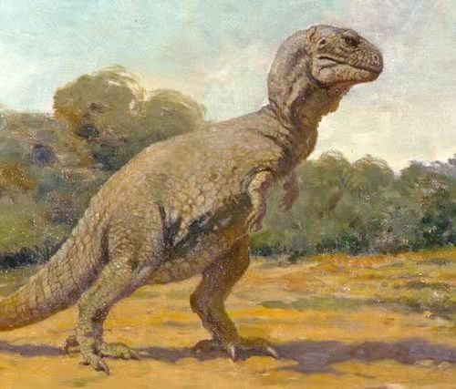
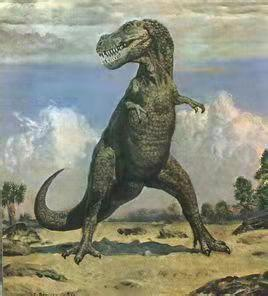
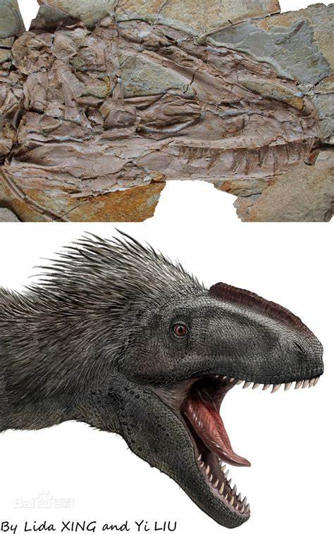
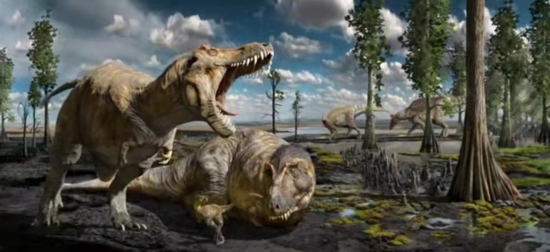
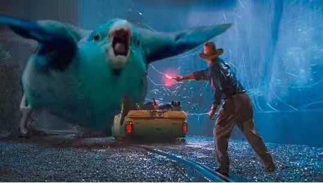

这是大家印象中霸王龙的形象。
这是霸王龙刚发现之后不久古生物学家给它的复原， 当时的古生物家觉得兽脚类恐龙可以像我们人一样直立行走， 尾巴拖在地上， 而且因为当时发现的化石材料太少， 古生物学家按异特龙的复原方式给霸王龙复原了三个手指。
过了一段时间，随着化石证据不断增加， 古生物学家认识到兽脚类恐龙应该是尾巴几乎平行于地面行走和奔跑， 也意识到霸王龙只有两个手指 所以他们把霸王龙复原成全身是鳞片和骨板的模样。
后来古生物学家觉得不对， 骨甲可都是像骨头一样坚硬的， 比起柔软、容易被微生物分解掉的皮肤， 这些甲片应该更容易形成化石、保存下来才对。 如果霸王龙身上长有坚固的骨甲， 那没有理由一点都没保存下来。 所以霸王龙的身上不可能长有骨甲。 又根据霸王龙的近亲————华丽羽王龙推测霸王龙有可能长毛。
这是霸王龙最新的复原， 古生物学家认为霸王龙头顶应该长有原始的毛发。
这是霸王龙的生态复原图。
所以《侏罗纪公园》没准应该这么演。